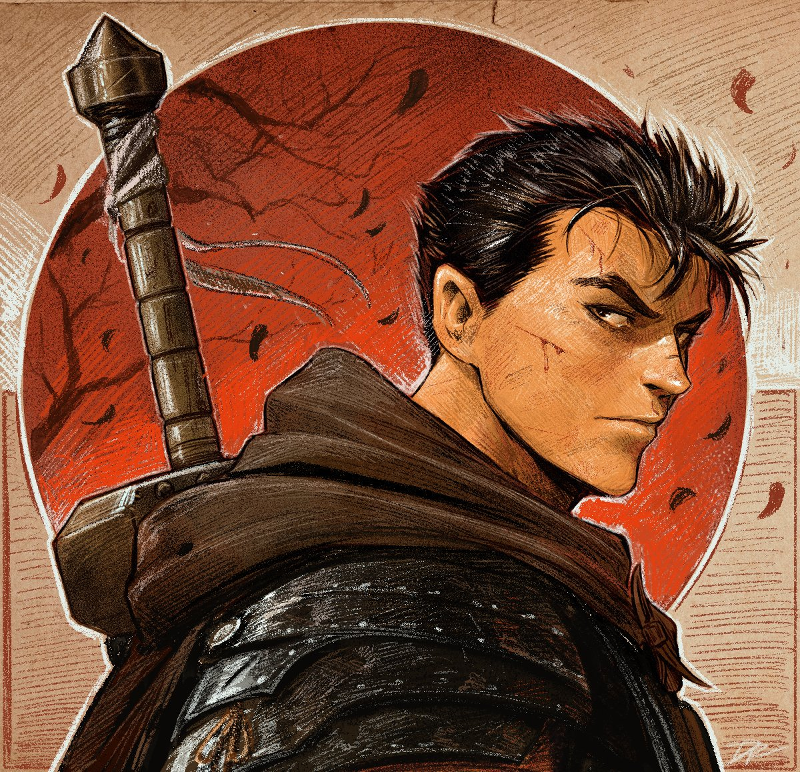
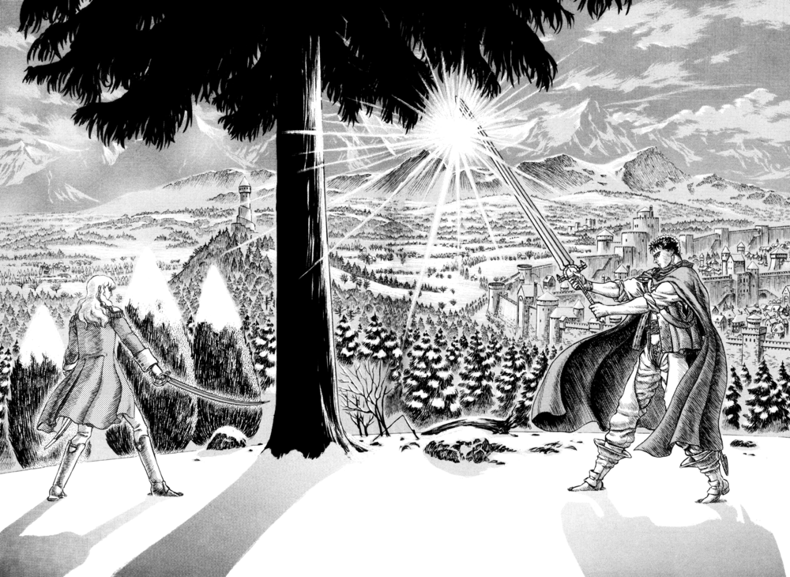

Guts is a mercenary who travels from company to company so he is always fighting. After meeting Griffith, Guts is defeated in battle by Griffith and is forced to join the Band of the Hawk. Guts has also appeared in every Berserk video game. Guts is a Byronic hero who is born as one who may be able to struggle against causality, but who is unable to maintain it indefinitely. His childhood and adolescence is defined by his growing up in a mercenary band after being adopted by a motherly prostitute named Shisu and later the band's leader Gambino, and his later joining of, and departure from, the Band of the Hawk.
The dynamic and turbulent relationship between Guts and Griffith, the leader of the Band of the Hawk, forms the primary focus of the manga for the first thirteen volumes. After the events of the Eclipse, during which he loses his left forearm and right eye, Guts seeks revenge on Griffith, who is now Femto. In the process, he is reunited with Casca after a separation of two years. Following the Incarnation Ceremony at Albion, Guts travels with a new group of companions.
"Do not pray. If you pray, your hands will close together. You will not be able to fight!"
Guts
Guts can be seen as the exact opposite of Griffith in just about every way. In appearance, he is a tall, muscular warrior with short black hair, a body full of scars and wields a monstrous weapon while dressed in cursed armor, whereas the latter is of average height, thin, has long white hair, no physical scars and wields a delicate sabre. Guts wears tattered black clothing and, though incredibly skilled, fights like a barbarian; winning by any means necessary. Griffith wears white armor and has a much more refined style resembling fencing. In addition they usually have the exact opposite effect on everyone they meet. Most people are naturally drawn to Griffith upon first meeting him and would die for him without hesitation whereas Guts is usually feared and detested by just about everyone he comes across until they get to know him, after which he will usually end up being revered as a hero by those same people. This extends to their morals and actions as well. Guts maintains the image of a callous warrior who manages to protect the people around him while Griffith puts up a somewhat idealistic facade but is also willing to sacrifice anybody without exception to further his ultimate goal. And while Guts unhesitatingly chooses to battle his way through enemies, Griffith refrains from excessive participation in combat, preferring to manipulate anyone in his way.
